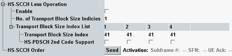

This section configures the HS-SCCH less operation and triggers the HS-SCCH order type 0, see "Continuous Packet Connectivity (CPC)".
The parameters from this section are defined in 3GPP TS 25.331 as the HS-SCCH less information.
The trigger of HS-SCCH order (type 0) is available only in the reduced signaling.

Activates/deactivates HS-SCCH less operation.
HS-SCCH less operation decreases the signaling overhead and reduces the UE battery consumption.
Remote command:Specifies the settings signaled to the UE for HS-SCCH less operation.
The table with transport size index list provides four columns for four preconfiguration sets with predefined transport formats and predefined channelization codes. The preconfiguration set to be used during the first R&S CMW - UE transmission of the HS-SCCH less operation can be selected as "No. of Transport Block Size Indicies".
The mapping between transport block size index and transport block size is specified in 3GPP TS 25.321, annex A (HS-DSCH transport block size table for FDD).
Enable the second HS-PDSCH code if two physical channels have to be used for the selected transport block size.
Remote command:- Discontinuous downlink reception
- Discontinuous uplink DPCCH transmission
- HS-SCCH less operation
This parameter is relevant for reduced signaling only and applicable to status connection established.
In normal signaling mode, DL DRX, UL DTX and HS-SCCH less operation are signaled according to the settings in the configuration tree.
Remote command: